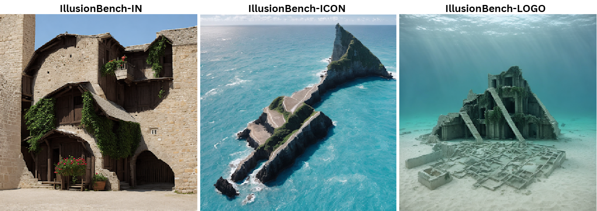
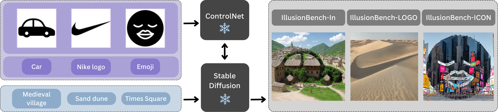
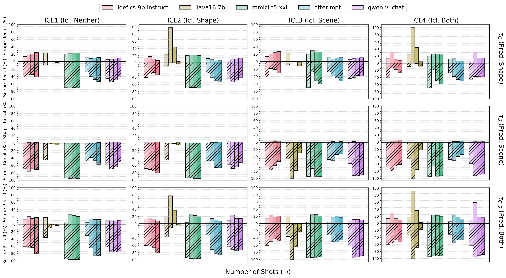

Can vision-language models recognize these shapes? IllusionBench dataset contains images in which scene elements are arranged to represent abstract shapes.

Dataset generation. For each of the 3 datasets in IllusionBench, we show an example image from the dataset alongside an example scene prompt and an example shape conditioning image used to generate it. A shape image (with the class name) and a scene description are combined to generate the IllusionBench image.

Zero-Shot Results. Average shape and scene recall of VLMs across each IllusionBench dataset, compared with Stylized-ImageNet (rightmost, shaded).
